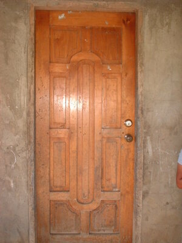
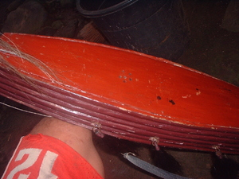
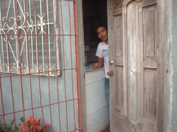

lekeb   
/lɔkɔb/
n.
“door”
1.
n.
door; gate; shutter
Kua nu pa ka lampasu diyè te lenged te lekeb.
Take the husk near of the door.
Eng. door; gate; shutter
Tag. pintô
Ceb. ganhaán; puertahan; pultahan
Ilo.: rídaw
WBM: lekeb
OCM: Miscellaneous Structures (349)
Online dict status: -
Usage level: F
2.
n.
shutter
Eng. shutter
OCM: Miscellaneous Structures (349)
Online dict status: -
Usage level: R
3.
v.
for someone (eglelekeb, agent, eg><ø-rdpCV-) to close something (such as a doorway gumawan) (eglekeban, location, eg><an-)
Eglelekeb a te tindaan ku su marusilem e.
Eglekeban kud e ka gumawan wey me bintana su marusilem e.
I will close the door and the windows for it is now getting late.
Eng. close; shut; seal
Tag. sarhán
Ceb. sira
Ilo.: irikep
OCM: Housekeeping (356)
Online dict status: -
Usage level: F
4.
v.
(nalekeban, nA><an-) (for a doorway) to be closed
Pangabangi e pa nikaniyu lukati su nalekeban ad e kayi te sinabeng.
Please help me to open the room for I was closed in.
Eng. closed; shut; locked in; trapped
Tag. sará; sarádo
Ceb. sira; sirado
Ilo.: nairekép
OCM: Housekeeping (356)
Online dict status: -
Usage level: M
adj.
(piglekeban, pig><an-) shut
Mania te piglekeban nu ka miyew diyè te seled te baley te egkeenen ka ngalap ne intahù ku diyè te seeg.
Eng. shut
Online dict status: -
Usage level: R
Updated by: RJH,TME,AAA,RJH
Last updated: 13/Oct/2009
"lekebi" in text "Examples of Anit"
"miglekeban" in text "Aurelio's Marriage"
"miglekeban" in text "Aurelio's Marriage"
"miglelekeb" in text "Aurelio's Marriage"
"miglekeban" in text "Aurelio's Marriage"
"egpalekeban" in text "Aurelio's Marriage"
"miglekeban" in text "Aurelio's Marriage"
This page last updated: 03-Jan-2020
Copyright © 2009-2014, Matigsalug Language Christian Association, Inc